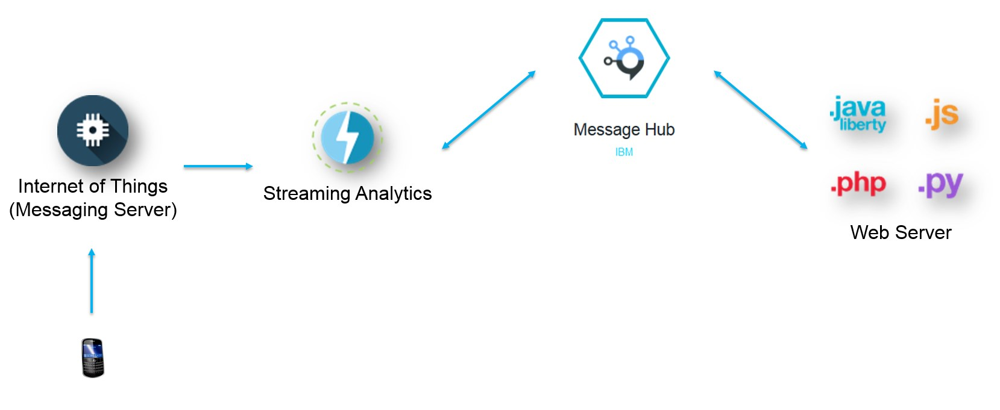

In this demo, the markers represent GPS coordinates captured via a device (i.e. mobile phone) and the polygons represent geofences.
If a geofence contains a marker (or entity), the fence will turn red. Whenever the fence is empty (i.e. no markers fall within the fenced in area),
the fence will turn blue.
This application is running entirely on the IBM Bluemix cloud environment. The architecture of the application is as follows:
- GPS coordinates are sent to a messaging server using the MQTT protocol. This is facilitated using the IoT Bluemix service
- The Streams application subscribes to the IoT messaging server and ingests the GPS data in real-time. The application uses the "Geofence" operator to
analyze the incoming data and determines when an "entity" enters or exists a geofence. This the results of this analysis is sent to the MessageHub
service, which is backed by Kafka. The "Streaming Analytics" Bluemix service enables users to quickly setup a Streams instance and launch Streaming applications.
- The MessageHub Bluemix service enables communication between loosely coupled Bluemix services. For this application, the MessageHub is being used to
allow the Web application to consume the output of the Streams application.
- The web application is a "Liberty for Java" application that is hosted on Bluemix.
